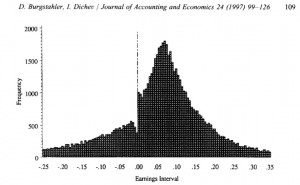

Bausch & Lomb/Revenue Recognition (BAV, Wednesday, Week 1)
business-analysis-and-valuationyear-twoThe vast majority of accounting fraud involves revenue recognition.
Do companies play games with earnings? Duh, yes.

{kind=link}
Incentives to game:
-- Meeting/beating analysts' expectations pays off in share price, especially for "habitual beaters"
-- Markets reacts poorly to revenue surprises (especially for growth firms)
-- Resource allocation within firm
-- Personal compensation, promotion, etc.
Q: When do we recognize revenue? (first-year review)
A: When it is (1) realized/realizable and (2) earned.
Warning signs for revenue recognition games:
-- Increase in days receivable
-- Long-term loans to customers (why are they happening?) or sales on consignment
-- Transactions that are not actually arm's length (i.e. Bausch & Lomb took returns of contact lenses, even though they said they wouldn't)
-- Barter transactions or other transactions with lots of judgment involved (multiple deliverables, customer acceptance provisions, etc.)
-- Management under pressure to meet targets
Senior management at Bausch & Lomb not convicted of fraud, but still guilty of creating an environment that encouraged fraud and failing to implement sufficient controls against fraud. Gulf between "official" company policy and side deals some employees made with distributors to permit returns, subsidize storage post-sale, etc.